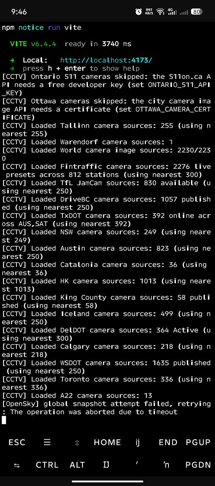
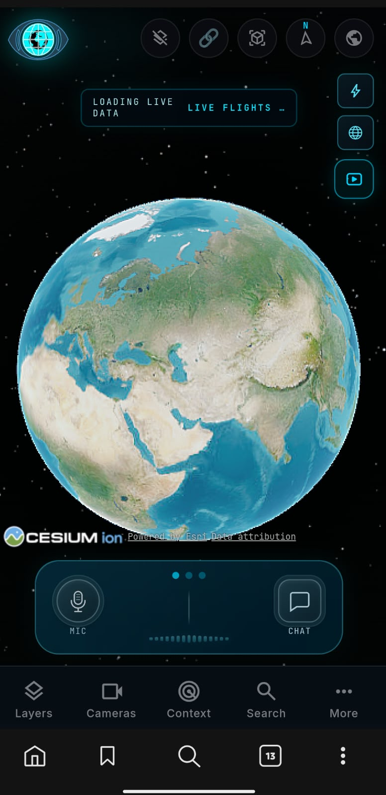
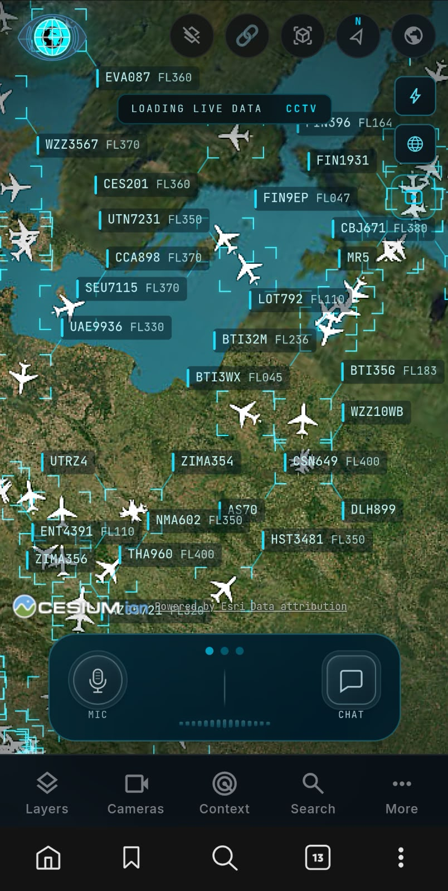
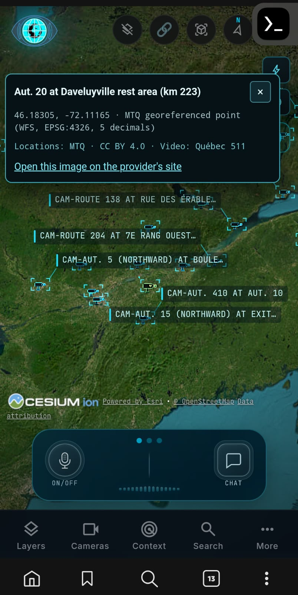

What you need
- An Android phone. Mine is an Infinix GT 20 Pro on Android 15 (arm64). Other devices and Android versions have not been tested here.
- Termux. The maintainers recommend the stable F-Droid or GitHub build for most users. The Google Play build is a separate experimental branch. Follow the official installation instructions and do not mix app/plugin sources.
- Internet, and not just for the setup. Online map and live-data features need a connection.
- Some patience for installation and the first load. Your connection and phone will affect the wait.
Update Termux packages first
Before the npm install could run, my terminal reported a missing libicui18n.so.79 library. Updating the Termux packages was the suggested next step; the later npm output shows Node was running again. The commands here start with a full package update rather than mixing old and new packages.
pkg update && pkg upgrade -yInstall Node.js, npm and git
pkg install nodejs-lts npm gitThen check it worked:
node -vA version number confirms Node can start. Keep the version for your own troubleshooting notes.
Keep the phone awake
termux-wake-lockThis requests a wake lock to prevent deep sleep. It is useful while running a local server, but it does not guarantee Android will never stop Termux. Keep Termux open and check its output if the page stops responding.
Clone God's Eye View
git clone https://github.com/bilawalsidhu/gods-eye-view
cd gods-eye-viewInstall dependencies (the command that matters)
PUPPETEER_SKIP_DOWNLOAD=1 npm ci --forceThis is the workaround used in my successful install. Read the limits before copying it:
My install reported 225 packages added, 8 vulnerabilities (6 moderate, 2 high), and blocked install scripts for esbuild, Puppeteer and vue-demi. Those warnings are not a clean security result. Use npm audit to inspect the findings and review blocked scripts before deciding what to approve. Do not automatically run npm audit fix --force or enable every script. A page loading does not prove all dependencies and features work.
Start the server
npm run devKeep this terminal session running. Use the local address printed by the server; the address used in this setup was localhost:4173. If the terminal prints an error instead, resolve that before opening the browser.

Open the globe
Open Chrome on the same phone and go to:
localhost:4173The first load took a while in my run. Once it opened, I reported that it was working and the performance was fine. If your server prints a different port, use that address instead. This result is a basic working-page check, not a test of every layer or data feed.



What to expect
- Expect online maps and data feeds to need internet. This guide does not verify offline support or every feed.
- The first load was slow in this run. Wait times will vary.
- If the globe stops responding, check that Termux and the server are still running. A wake lock can help with deep sleep but is not a cure for every background-process issue.
- Only one phone is represented here. Performance and feature support on other devices remain untested.
Errors and limits from this run
- Node will not start, or an ICU library error: try pkg update && pkg upgrade -y (step 1), then recheck the exact error.
- npm error EBADPLATFORM for eccodes-wasm: npm is refusing the "android" platform. The --force flag in step 5 skips that check.
- Puppeteer browser download fails: PUPPETEER_SKIP_DOWNLOAD=1 in step 5 skips the download, not the need for a supported browser if you use automation features.
- npm audit warnings or blocked scripts: review them separately. This guide does not establish that they are harmless.
When finished, stop the server with Ctrl+C in Termux and release the wake lock:
termux-wake-unlockSources & further reading
- God's Eye View on GitHub ↗
- God's Eye View official site ↗
- My Android/Termux report on GitHub ↗
- Termux installation instructions ↗
- npm: force and install-script settings ↗
- Puppeteer: skipDownload configuration ↗
- Termux wiki: termux-wake-lock ↗
This is a build note from my own run on my own phone, not an official guide. If the project changes, the repo README wins.